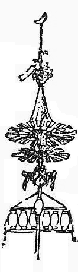
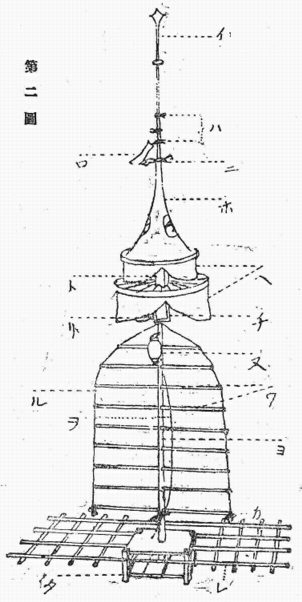

夏祭浪花鑑の長町裏の場で、院本には「折から聞える太鼓鉦」とあるばかりなのを、芝居では、酸鼻な舅殺しの最中に、背景の町屋の屋根の上を、幾つかの祭礼の立て物の末が列つて通る。あれが、だいがくと言ふ物なのである。尤、東京では、普通の山車を見せる事になつて居る様であるが、此は適当な飜訳と言ふべきであらう。
一昨年実川延二郎が本郷座で団七九郎兵衛を出した時は、万事大阪の型どほりで、山車をやめて、だいがくを見せたとか聞いて居る。一体此立て物は、大阪の町に接近した村々では、夏祭り毎に必出した物であつたが、日清役以後段々出なくなつて、最後に木津（南区木津）の分が、明治三十七八年戦争の終へた年に出たぎり、今では悉皆泯びて了うて居る。
此処には木津のだいがくの事を書いておく。だいがくの出来初めは、知れて居ない。唯老人たちは、台の上に額を載せて舁ぎ廻つたのが、原始的のもので、名称も其に基いて居るといふ。けれども今も豊能郡
別図の［＃図省略］様な態を備へる事になつたのは、今から六十年程の前の事で、其以前は
一体ひげこは日の子の音転で、太陽神の姿を模したのだ、と老人たちは伝へて居るが、恐らくは、竪棒の上に、
但し今一つ考へに入れて置かねばならぬのは、
 に樹てゝ舁くか、車に乗せて曳き歩くより外に道はなくなる訣である。
に樹てゝ舁くか、車に乗せて曳き歩くより外に道はなくなる訣である。だいがくの成立した形は、前者である。尚老人たちは、だいがくに数多の提灯をとりつける様になつた起りを、ある年の住吉祭り（大阪中の祭礼として、夏祭りの一番終りに行はれる）に、住吉まで出向いただいがくが、帰り途になつて日の暮れた為、臨時に
其はともかく、住吉祭りといふ事が、だいがくと住吉踊りの傘鉾との関係を見せて居る様に思はれる。天幕に一重のも二重のもある点、竿頭にだしのついてゐる点、すべてかの踊りの傘鉾を、
の上に竪てた物としか思はれぬ。だいがくのひげこは二重の上の方が大きくて、直径一丈で、下の方のは大分小さい。第一図の如く、蛇の目傘の様な形で、外囲りは藍紙、中囲りは赤紙、内廻りは亦藍紙を張つてゐる。外囲りの藍紙は、内の紙の倍の長さに作る。骨は竹である。日向国児湯郡

天幕を使ふ様になつてから、非常に華美を競ひ出して、長さ八間幅一間余の緋羅紗に、
の地についた処からだしの尖端まで、十七間から十八間位の高さになつて、重さは二千貫、八十人乃至百人の力でなければ、動す事が出来なくなつた。
だいがくの名
イ だし又はほことも言ふ。長さ凡一丈。町々で皆違うた物をつけてゐる。三日月・一本劔 ぼこ・三本劔 ぼこ・薙刀ぼこ・千成り瓢箪ぼこ・神楽鈴ぼこなどで、中でも、新町の薙刀ぼこをつけただいがくは、常によく活動して居た。西の町は、後に一本劔になつたが、古くは粟穂になるこで、なるこは鳥居に垂れてゐた処であつた。
ロ ふけちり 紋は、巴と木
を裏表につける。但し、東の町は、五色のばれん。
ハ さんじやのたくせん 三社の託宣であらう。藁を束ねて結ぶ。伊勢・八幡・春日を表すと言ふ。
ニ 榊と御幣 ほこの結び目を掩ふ様にしてつける。
ホ ほこ だしをもほこと言ふ事はあるが、此とは別である。円錐形に縫うた緋羅紗の袋。巴と木とを、反対の側に白く縫ひ出す。（東の町は錦襴）。
とを、反対の側に白く縫ひ出す。（東の町は錦襴）。ヘ てんまく 緋羅紗（白羅紗の物もある）に武者・龍虎・鳳凰など縫うた物。錘 代りに無数の小さな鈴をつける。
ト へだての額 天幕と天幕とを隔てる額の意。ひげこのだいがく（別図［＃図省略］。向つて右方の小さい物）の形式が残つたのである。長方形のはりこの函で、四方に天下太平・五穀成就・今月今日・祇園宮と書いてある。
因に、木津の氏神は、難波の名高い八坂とは別で、木津の祇園（敷津松の宮と言ふ）である。
チ 額 八坂神社と書く。
リ まむり 守り袋の大きな物を、鐘楼の撞木の様に吊る。赤地錦襴である。
ヌ 一人持ち提灯 額の下、第一の緯木 の上下に、直角にさした腕木の間に吊るので、此提灯を始め、提灯といふ提灯は皆、町々 の紋を描く定めである。昔は「一人持ち」と共に、五十七箇のきまりであつたのが、後には百七箇迄殖えた。
ル みづひき 紅白の縮緬で、緯木を結ぶので、昔は白木綿であつた相である。最後の緯木 で結び垂げる。
ヲ 引き綱 正面と裏とに、一筋づゝ垂げてゐる。麻縄である。
ワ 緯木 明治以前は七本、以後は九本になつた。
カ 絹房と鈴と 水引きの末を隠す様につける。
ヨ 経棒 十五間乃至十六間。緯木と共に檜を使ふ。
タ 高さ一間。欅を用ゐる。
高さ一間。欅を用ゐる。レ 舁き棒 竪長さ六間。横長さ二間。
一体、大阪の町は勿論、農村ばなれをして来た郊村では、夏祭りは盛んだが、秋には唯、型ばかりな処が多い。だいがくなども、覚えてからは、秋祭りには出た事がない。多くは宵宮から二日間舁いたが、後には三日も舁いた。町々の広場で、横に寝さして組むので、組みあがると、引き綱とつっかひ棒とで起すのである。本祭りの日には、宮の前の大道に縦列を作つて、勢揃へをする。かう言ふ時に、とりわけ喧嘩が多かつた。だいがくを動すのは、音頭と太鼓の拍子とである。唄の文句には、別に特有の物はない。此は、此たて物が近世に出来た物だと言ふ事を示してゐるのである。
の上に乗つて居て、ゆり
よゝい／＼よい／＼よい。そこぢやいな／＼。あどっこい、どっこいとお なよい／＼。よいさ／＼／＼
と合唱して「なよい／＼」まで来ると、皆手を拍つて肩を入れて舁き出す。「よいさ／＼」は舁きながら言ふことになる。舁きはじめると、又「笠を買ふなら、深江が名所」と謡ふ。此句ぎれ迄来ると、又囃しがはじまる。かうして、繰りかへし／＼する中に、かなりの距離を動くのである。たて棒は、引き綱で、廻すことが出来る様になつてゐたが、何にしろ非常な重みだから、さう自由にはならなかつた。夜は燈を入れて舁いた。其ゆさ／＼と揺れて行く様は、村人の血を湧き立たせたものである。
電信の針金が、引かれてからは、舁いて廻る範囲を狭められたが、其でも祭り毎には、必舁き出した。併し、木津の家並みの処では、許されぬ事になつて、処をはづれた野原などに立てゝ、長さ一町位の広場を往来するだけ位で、辛棒してゐた。
とう／＼、松の宮の境内に、絵馬堂を拵へるといふ事で、竪棒を切つて、其柱にしてからは、祭りが来ても、だいがくは出なくなつた。天幕其他、未練の種になる物はすべて売り払はれて、揃へのゆかたの若者どもが、右往左往に入り乱れる喧嘩沙汰も痕を絶つことになつた。